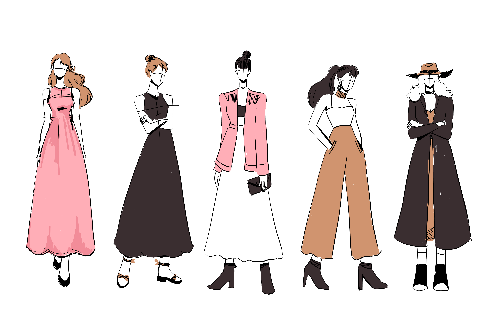

6 Jenis Style dalam World of Fashion!

Sebelum membahas berbagai jenis gaya busana, mari kita pahami dulu arti istilah gaya busana. Dikutip dari italianfashionschool.id, fashion merupakan istilah yang berasal dari kata latin “factio”. Dalam bahasa Inggris, kata-kata tersebut kemudian diserap menjadi kata “fashion”. Secara umum, fashion dapat diartikan sebagai gaya pakaian yang populer dan sesuai dengan suatu budaya. Mulai dari gaya berpakaian seseorang sehari-hari ataupun saat menghadiri suatu acara.
Jika ditelusuri lebih lanjut ada banyak jenis style dalam dunia fashion lohh, dan kali ini Miminoish akan membahas 6 style yang sering digunakan dalam keseharian kita. Yukk simak terus!

Casual Fashion Style
Gaya fashion kasual adalah gaya pakaian yang nyaman, santai, dan tidak formal. Ini adalah gaya yang paling umum digunakan dalam situasi sehari-hari, seperti saat berjalan-jalan, bertemu teman, atau melakukan kegiatan lainnya.

Street Fashion Style
Hampir sama dengan gaya kasual, street style juga gaya pakaian yang santai. Bedanya, pakaian street style biasanya lebih besar dari badan kita atau pakaian oversize. Kombinasi warna yang biasanya maskulin seperti monokrom dan denim.

Chic Fashion Style
Chic berasal dari bahasa Perancis yang berarti keterampilan dan keanggunan. Chic Style atau dikenal dengan gaya trendi selalu menjadi dambaan banyak orang. Gaya ini dikaitkan dengan kota Paris, salah satu pusat mode dunia.

Vintage Fashion Style
Gaya vintage identik dengan model fashion tahun 70an hingga 80an. Meski terbilang lawas, gaya vintage yang satu ini masih digemari banyak orang karena bisa dipadupadankan dengan unsur modern menggunakan pilihan warna.

Formal Fashion Style
Jika ingin menghadiri pertemuan penting, gaya formal bisa jadi pilihan. Gaya ini akan menimbulkan kesan profesional dan serius, cocok untuk acara formal atau pertemuan bisnis. Namun, berpenampilan formal tidak selalu harus tampil kaku.
Preppy Fashion Style
Gaya ini erat kaitannya dengan para pelajar. Namun tidak seperti gaya formal, preppy style tidak terlalu kaku. Gaya preppy memberikan kesan elegan dan klasik yang sering diidentikkan dengan warna-warna pastel dan motif garis-garis.
Nah itulah 6 macam style di dunia fashion yang sering kita jumpai di kehidupan sehari-hari kita nih Nioshes! Kehidupan masyarakat di zaman modern ini pastinya tidak akan lepas dari per-style-an. Dengan seiring berjalannya waktu, Miminoish rasa style-style dalam dunia fashion bakal terus bertambah nih. Tunggu artikel lain dari D'Lianoish Fashion yaa! Semoga artikel ini bermanfaat bagi kita semua.